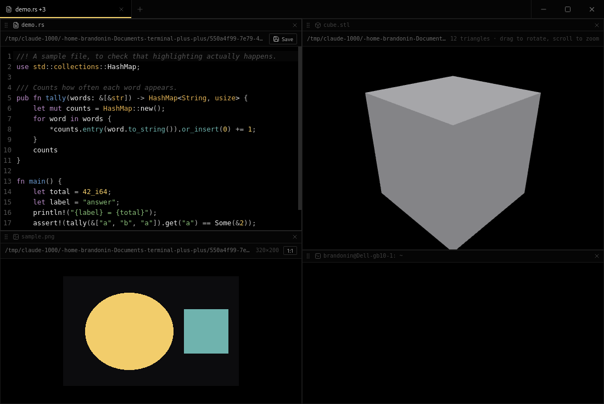

Terminal · macOS · Windows · Linux
A tabbed terminal with tmux-style splits, where a pane can also be a notepad, a browser, or a viewer. It records what you have typed but not submitted, so a crash costs you a keystroke instead of a train of thought.

The half-typed command at every prompt is mirrored from your keystrokes and written to disk continuously — then typed back when you reopen. Never with a newline, so nothing runs on your behalf.
Split, zoom, move focus by direction, resize from the keyboard, and drag a pane by its grip to rearrange. Moving a pane never restarts the shell in it.
A notepad with syntax highlighting and save, a web pane, and viewers for images, video, audio and STL meshes. The file you pick decides which.
Each pane's output is recorded as it arrives, so a recovered session shows what was on screen rather than a bare prompt.
Mod is Ctrl, and ⌘ on macOS. Hold the + in the tab bar for Notepad, Open file…, or Browser.
These builds are not code-signed. macOS will say the developer
cannot be verified — right-click the app and choose Open, then
Open again. Windows SmartScreen will offer More info → Run anyway.
A Linux AppImage needs chmod +x first.
Ctrl + D splits a pane, which takes the shell's end-of-file away
from you. Ctrl + Alt + D sends a literal EOF instead, and one line in
src/lib/keymap.ts gives the key back if you would rather have it.